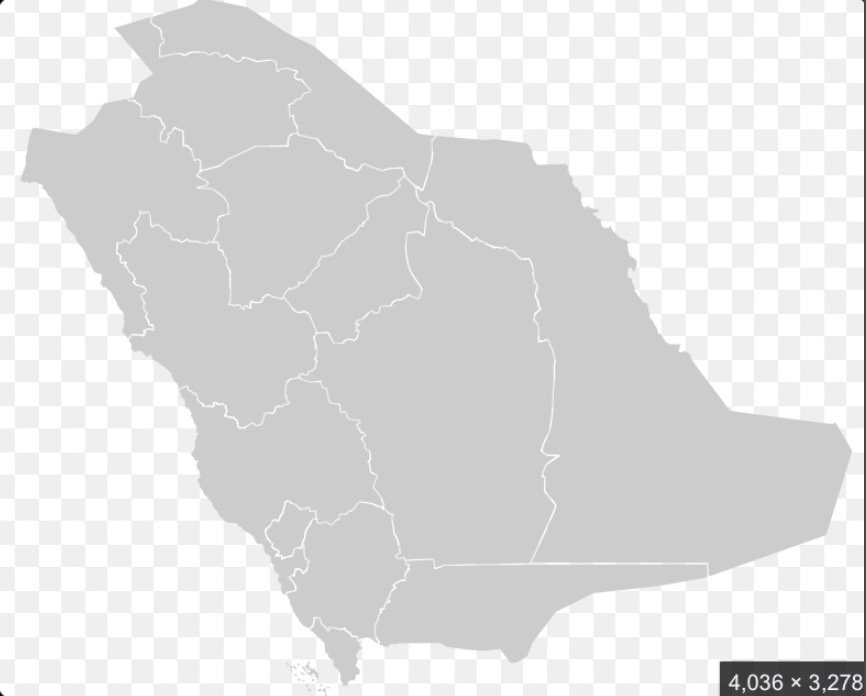

رحلة ملكية بين المعرفة والمواطنة وجمال وطننا وطموحاته
طموح وطننا
ابدئي هناأنا أساهم
🔒 مقفلةمدن وطننا
🔒 مقفلةإنجازات عالمية
🔒 مقفلة✦ كل محطة تفتح لك بابًا جديدًا من أبواب الوطن ✦
ثلاثة محاور تصنع مستقبل وطننا
اضغطي على كل بطاقة لتتعرفي عليها.
كل محور يحمل طموحًا جميلًا لمملكتنا.
المواطنة أفعال نمارسها كل يوم
أجيبي عن المواقف الأربعة بشكل صحيح.
من مدينة إلى مدينة، نكتشف جمال المملكة
اضغطي على النقاط الذهبية أو اختاري المدن من الأسفل. زوري خمس مدن لإكمال الرحلة.

المملكة العربية السعودية
اكتشفي معالم مدن وطننا.
لكل مدينة حكاية وتراث.
طموحنا يعانق المستقبل
اكتشفي البطاقات الست وأجيبي عن السؤال.
تعرفي على إنجازات وطننا.
٠ من ٦ بطاقاتلقد اكتشفتِ رؤية وطنك وتعرفتِ على مدنه وإنجازاته، وأثبتِّ أنكِ مواطنة واعية ومسؤولة.
الإبتدائية الخامسة والأربعون
الصف: ٢/١
المعلمة: دار الهناء الحربي
مديرة المدرسة: هبة فلمبان